In his twenties, Naval Ravikant was broke and desperate.
He had immigrated from India as a child, grown up in a single-bedroom apartment in Queens, and now found himself grinding through low-paying jobs while chasing startup ideas that went nowhere. He was anxious. He was unhappy. He was, by his own admission, miserable.
Then something shifted.
He didn't win the lottery. He didn't inherit money. He figured something out.
By his forties, Naval was worth hundreds of millions of dollars. He had co-founded AngelList and made early investments in Uber, Twitter, and Postmates.
But more remarkably, he was at peace.
Not the fake peace of someone suppressing their emotions. Real peace. The kind that lets you sit alone in a room for an hour without reaching for your phone.
I was born poor and miserable. I'm now pretty well-off, and I'm very happy. I worked at those. — Naval Ravikant
This claim sounds arrogant until you realize what it implies.
If Naval worked at wealth and happiness, they are not accidents of birth. They are not gifts from the universe.
They are skills.
Most of us see wealth and happiness as opposing forces. To get rich, we assume we must sacrifice our peace. To be happy, we assume we must renounce ambition.
Naval disagrees.
He argues that if you understand the math of leverage, you can build wealth without grinding yourself into dust. If you understand the biology of desire, you can find peace without retreating to a cave.
The Almanack, curated by Eric Jorgenson, is a collection of Naval's wisdom. It strips away the fluff and delivers the mental models required to win both games.
By the end, you will discover:
- Why wealth is a skill you can reproduce even if you lost everything.
- Why an army of robots is the ultimate lever for the modern age.
- Why certainty is the biggest obstacle to making great decisions.
- How to remove the "unhappiness contract" you signed with yourself.
- Why you are the only one who can save yourself.
- Moving from independence to true sovereignty.
The 1-Minute Summary
Life consists of two massive games: the Wealth Game and the Happiness Game.
Most people play both poorly because they rely on hard work for the first and external validation for the second.
The Wealth Thesis Wealth is not a function of hours worked. It is the result of Specific Knowledge applied with Leverage. * Specific Knowledge is the thing you do that feels like play to you but looks like work to others. It is authentic to your DNA, meaning no one can compete with you on it. * Leverage is the force multiplier (Capital, Labor, Code, or Media) that disconnects your inputs from your outputs, allowing you to earn while you sleep.
The Happiness Thesis Happiness is a default state of peace that emerges when you remove the sense that something is missing. * Desire is a contract you make with yourself to be unhappy until you get what you want. * Freedom goes beyond financial independence. It includes freedom from your own uncontrolled reaction to the world.
Success is winning the wealth game so you can stop playing it. Happiness is realizing you never needed to play the status game in the first place.
If this breakdown resonates, explore more at longform.online
Module 1: The Principles of Wealth
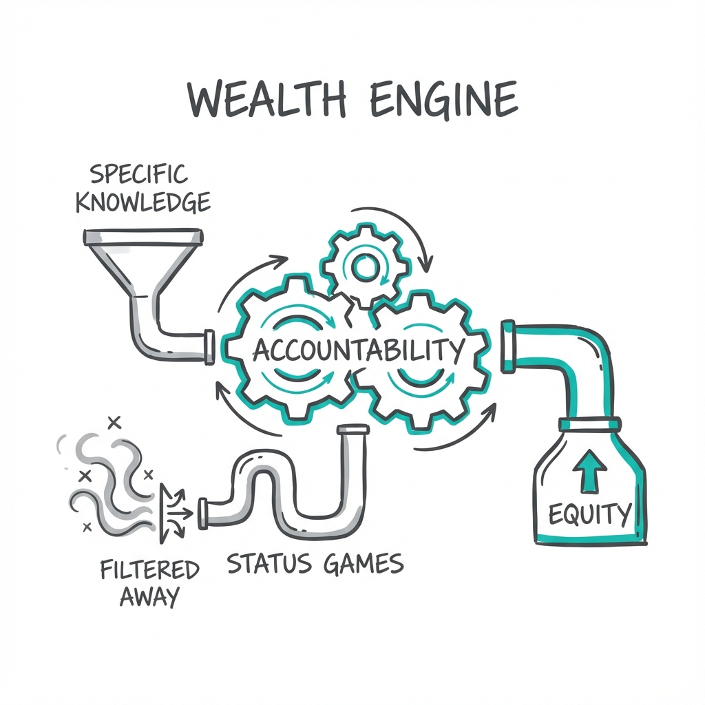
There is a common misconception that getting rich is about luck.
If you play the lottery and win, that is luck.
If you bet everything on a penny stock and it 100x’s, that is luck.
But if you were to take a wealthy person like Elon Musk or Warren Buffett, strip them of all their money, and drop them in a random English-speaking country, they would be wealthy again within ten years.
Making money is a skill.
To master this skill, you first have to know what you are chasing.
You do not want money. You want wealth. * Money is how we transfer time and wealth. It is a social credit. * Status is your place in the social hierarchy. It is a zero-sum game. * Wealth is assets that earn while you sleep. It is the factory, the code, the brand, the investment portfolio.
The goal is to build wealth. And the most dangerous trap preventing you from building wealth is playing Status Games.
Status is an old game.
It predates civilization. In a hunter-gatherer tribe, status determined who ate first and who mated. It is deeply wired into our biology.
But status is a zero-sum game.
To win, you must put others down.
Wealth, by contrast, is a positive-sum game.
We can all be wealthy. We can all build houses, write code, and create abundance.
The problem arises when people link their self-worth to status. They attack wealth creation to look morally superior in the status hierarchy.
Avoid status games.
They make you an angry, combative person. Play Wealth Games instead.
Productize Yourself
Naval summarizes his entire philosophy of wealth creation in two words: Productize Yourself.
This is the core formula.
- Yourself has uniqueness. It has accountability. It has specific knowledge.
- Productize has leverage. It has scale. It has a disconnect between inputs and outputs.
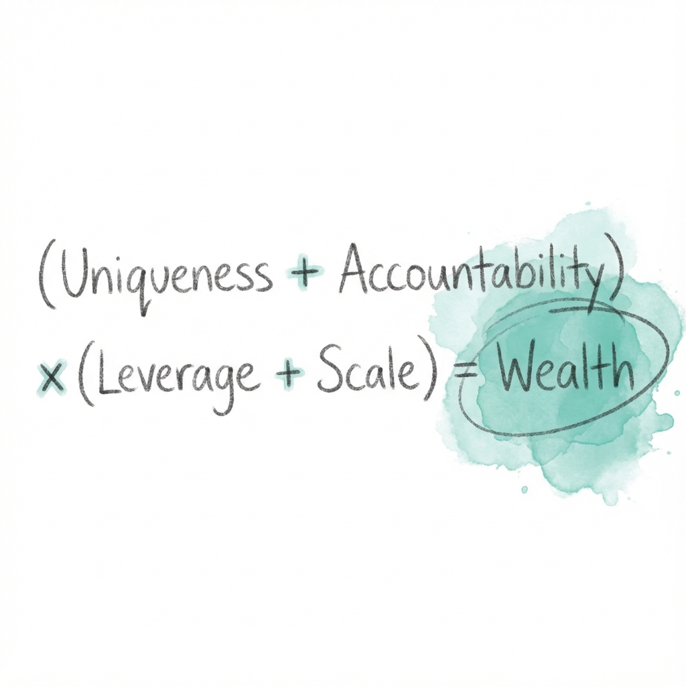
If you are looking for a long-term career, you need to ask: "Is this authentic to me? And am I scaling it?"
You cannot get rich renting out your time. You are not going to become a billionaire (or even financially free) by working for an hourly wage, even if that wage is \$1,000 an hour. As long as your input (time) is tied to your output (money), you are trapped.
You must own equity. You must own a piece of a business. You must Productize Yourself.
Specific Knowledge
To Productize Yourself, you must first uncover what you are uniquely good at. Naval calls this Specific Knowledge.
Specific knowledge cannot be taught in schools.
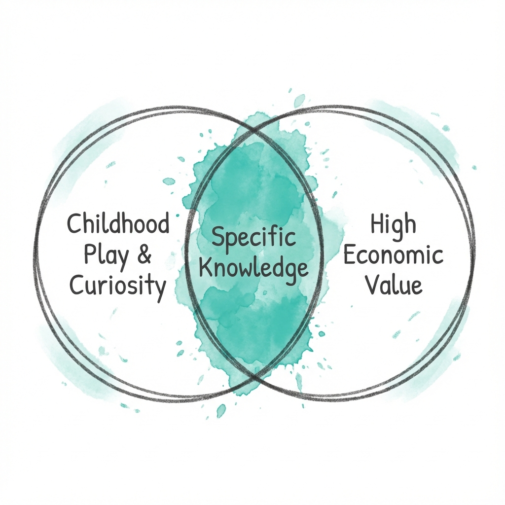
If society can train you to do something, it can train someone else to replace you. If you can be replaced, your margin will be competed down to zero.
Specific knowledge is found by pursuing your genuine curiosity and passion rather than whatever is hot right now.
Specific knowledge feels like play to you, but looks like work to others.
- To the person analyzing stock charts for fun on a Sunday morning, it’s play. To the person doing it for a paycheck, it’s torture. The person playing will always outwork the person working.
- To the kid reading sci-fi novels and learning computer logic, it’s play. To the student forced to learn coding syntax, it’s a chore.
When you are building specific knowledge, you are not competing. You are escaping competition through authenticity.
No one can compete with you on being you.
I'm always working. It looks like work to others, but it feels like play to me. And that's how I know no one can compete with me on it. Because I'm just playing, for sixteen hours a day. If others want to compete with me, they're going to work, and they're going to lose. — Naval Ravikant
Specific knowledge is often highly technical or creative. It cannot be outsourced or automated. It is usually at the edge of knowledge, the stuff that is just being figured out right now.
Look back at your childhood. What were you doing effortlessly that others found difficult? * Were you the kid negotiating with teachers? (Sales) * Were you the kid organizing the neighborhood games? (Management) * Were you the kid taking apart the radio? (Engineering)
When you combine your specific knowledge with the ability to sell it and build it, you become hard to compete with.
- Learn to Sell: Marketing, communication, recruiting, raising money.
- Learn to Build: Coding, design, manufacturing, logistics.
If you can do both, you are a unicorn. If you can only do one, find a partner who can do the other. But start with the Specific Knowledge that is unique to you.
Once you have found what you should be doing, the next step is to apply the force multiplier that turns effort into wealth: Leverage.
Module 2: The Leverage Equation
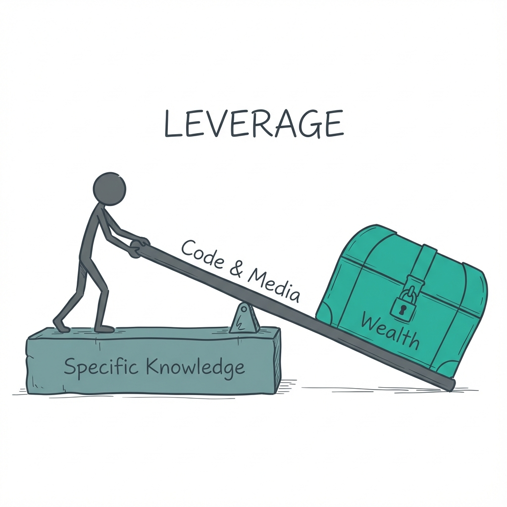
Archimedes famously said:
Give me a lever long enough and a place to stand, and I will move the earth.
In the context of wealth, Specific Knowledge is the place where you stand. It provides the solid footing of authenticity.
Leverage is how long the lever is.
You can have the most unique skills in the world, but if you are only applying them one hour at a time, you will never create massive wealth. To get rich, you need to detach your inputs from your outputs. You need force multipliers.
There are three broad classes of leverage. Understanding the difference between them, and which one you should chase, is the difference between the old rich and the new rich.
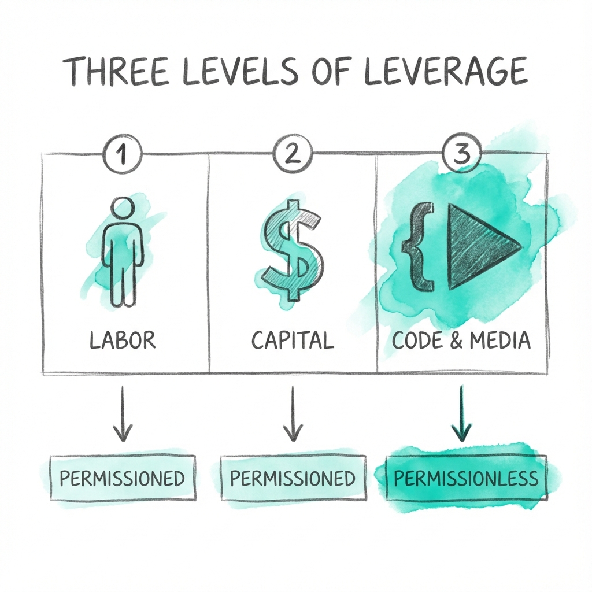
1. Labor Leverage (The Oldest Form)
This is other humans working for you.
It is the oldest form of leverage known to man. It is the Pharaoh building the pyramids or the factory owner managing a thousand workers.
Labor leverage is highly sought after because it signals high status. If you tell your parents, "I have 50 people working for me," they are impressed.
The Problem:
It is the worst form of leverage. Managing people is incredibly messy. It requires tremendous leadership skills, and you are always one short hop away from a mutiny. It has high agency costs and high friction.
2. Capital Leverage (The 20th Century Form)
This is money working for you.
It is the dominant form of leverage of the last century. It is the banker, the investor, the factory owner buying machines.
Capital scales much better than labor. It is easier to manage \$100 million than it is to manage 100 people. If you have good judgment, capital will flow to you.
The Problem:
Like labor, capital is Permissioned Leverage. You need someone else to give it to you. You have to raise money, pitch investors, or borrow from banks. You are dependent on gatekeepers.
3. Code & Media Leverage (The New Form)
This is the leverage of the newly rich.
It includes software, hardware, books, podcasts, blogs, and videos.
This form of leverage is distinct because it has Zero Marginal Cost of Replication. You write the code once, and it runs for a million users. You record the podcast once, and it streams to a million listeners.
Most importantly, it is Permissionless Leverage. * You do not need anyone’s permission to learn to code. * You do not need a publisher’s permission to put a video on YouTube. * You do not need a bank’s permission to build an app.
This is the most democratic form of leverage.
It is an army of robots freely available to anyone who knows how to speak their language.
If you cannot code, write books and blogs.
If you cannot build, create media.
An army of robots is freely available, it's just packed in data centers for heat and space efficiency. Use it. — Naval Ravikant
Embracing Accountability
Leverage is a double-edged sword.
It amplifies your judgment, but it also amplifies your errors. To get access to leverage (especially capital and labor) you must build credibility.
The only way to build credibility is to take on Accountability.
You must take risks under your own name.
In modern society, we are trained to avoid failure. We hide behind committees, team decisions, and anonymous corporate structures.
We want the safety of the herd.
But the herd does not get rich.
The Deal:
- If you take on accountability and fail, you bear the brunt of the failure (humiliation, loss of capital).
- If you take on accountability and succeed, you get the Equity.
Equity is the reward for accountability. It is the slice of the upside that you get to keep because you were the one who put your neck on the line.
Naval’s career is a case study in this.
He didn’t just invest. He put his name on the line to found AngelList. He lobbied Congress to change the JOBS Act. He took public positions. Because he took the risk under his own name, he reaped the outsized rewards.
The Input/Output Disconnect
When you combine Specific Knowledge with Leverage, you achieve the ultimate goal of the wealth game: The disconnection of inputs and outputs.
- Non-Leveraged Job: You work 1 hour, you get paid for 1 hour. (Waiter, Uber Driver, Lawyer).
- Leveraged Job: You work 1 hour, and the output could be \$0 or \$10 million. (Entrepreneur, Investor, Coder, Author).
A software engineer who writes a brilliant algorithm that saves a company millions of dollars didn’t necessarily work harder than the engineer who wrote a buggy one. They worked with better judgment and higher leverage.
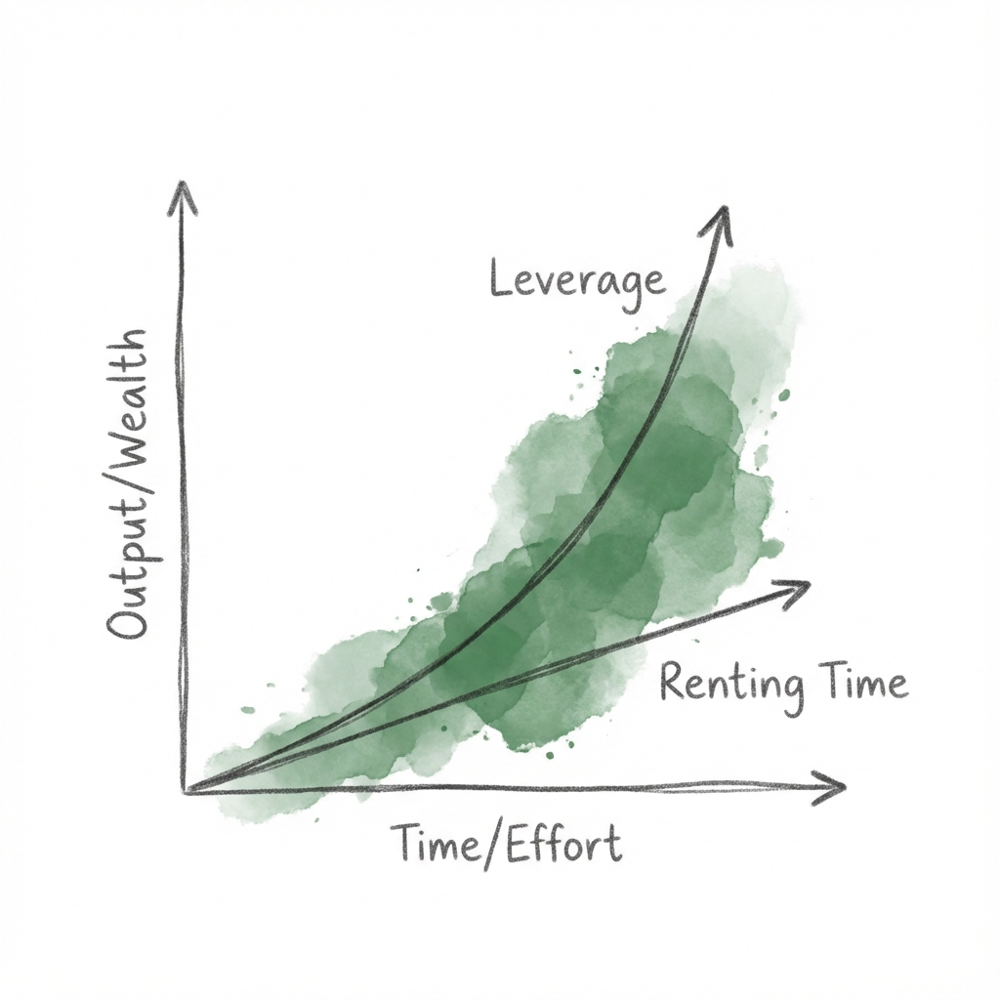
The 40-hour workweek is a relic of the Industrial Age. It was designed for factory workers whose physical presence equated to output. For knowledge workers, it is nonsense.
Knowledge workers function like athletes: Train, Sprint, Rest, Reassess.
You should not be grinding 80 hours a week. You should be thinking deeply, waiting for the right opportunity, and then sprinting with extreme intensity when the inspiration strikes. Then, you rest.
Earn with your mind, not your time. — Naval Ravikant
If you are constantly busy, you are doing it wrong. You have no time to think. And if you have no time to think, you cannot exercise the most valuable skill in the modern economy: Judgment.
Module 3: Building Judgment
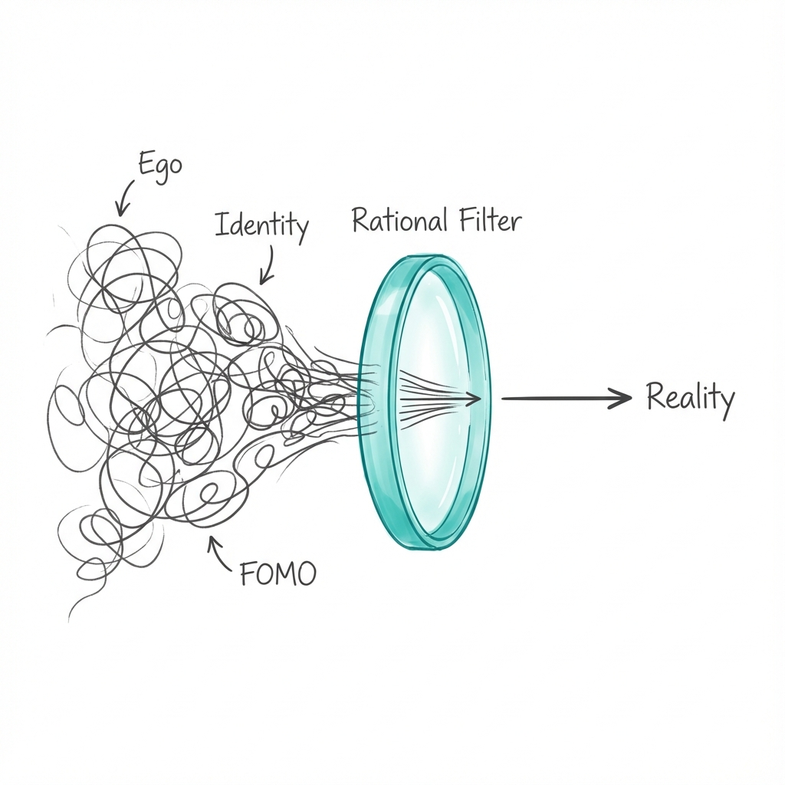
In an age of infinite leverage, judgment is the decisive skill.
If you are steering a massive ship (a billion-dollar company or a massive investment portfolio), a tiny shift in direction, a 1-degree turn, can mean the difference between discovering a new continent and crashing into an iceberg.
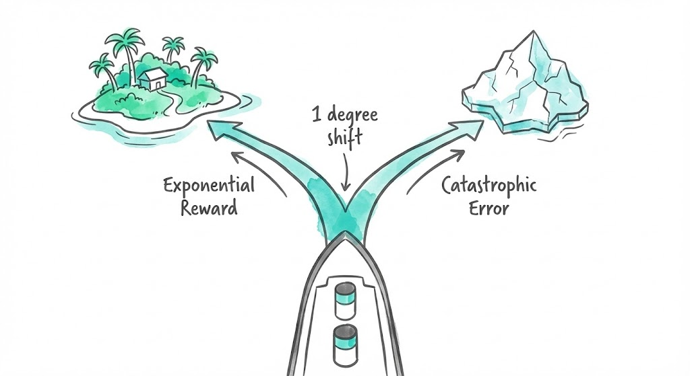
Because leverage magnifies your decisions, the cost of being wrong is catastrophic, but the reward for being right is exponential.
I would love to be paid purely for my judgment, not for any work. I want a robot, capital, or computer to do the work, but I want to be paid for my judgment. — Naval Ravikant
Naval defines wisdom as knowing the long-term consequences of your actions. Judgment is wisdom applied to external problems.
So, how do you build exceptional judgment?
You don't get it by being smart in the academic sense. You get it by being a Clear Thinker.
Stripping Away Identity
The biggest barrier to clear thinking is your ego.
We all have a Monkey Mind. A chattering voice that reacts emotionally to the world.
We have identities we desperately try to protect.
I am a Democrat. I am a capitalist. I am a victim.
When you attach your identity to a belief, you lose the ability to see reality.
You start filtering information to protect your identity rather than to find the truth.
The moment you tell somebody something dishonest, you've lied to yourself. Then you'll start believing your own lie, which will disconnect you from reality and take you down the wrong road. — Naval Ravikant
To think clearly, you must shed your identity.
You must be willing to kill your own bad ideas. Radical honesty, with others and yourself, is the only way to keep your feedback loops clean.
Heuristic 1: If you can't decide, the answer is no.
In a world of abundance, we are overwhelmed with choices. We have FOMO. We say maybe to everything. But maybe kills you by a thousand cuts.
- If you are deciding on a spouse, a city, or a business partner, and you are creating a Pros and Cons list: the answer is no.
- These are long-term, locked-in decisions. You need to be Hell Yeah or No.
Heuristic 2: If you have two equal choices, take the path that is more painful in the short term.
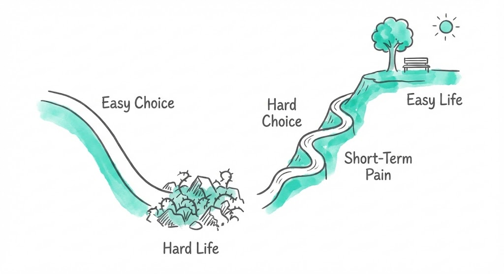
Your brain is wired to avoid pain.
If two choices look equal, one likely has short-term pain (which leads to long-term gain) and the other has short-term pleasure (which leads to long-term pain). Your brain is subconsciously over-valuing the pleasure. Cancel that bias by leaning into the pain. "Hard choices, easy life. Easy choices, hard life."
Collecting Mental Models
You cannot memorize the solution to every problem. The world is too complex. Instead, you need Mental Models. Compact ways to recall deep principles that apply across different domains.
The goal is to build a latticework of mental models in your head so that when a new problem arrives, you can hang it on the framework you’ve already built.
Some of Naval’s favorites: * Inversion: Instead of trying to be smart, try not to be stupid. Instead of trying to succeed, try to avoid failure. Eliminating the death moves is often more effective than finding the winning moves. * The Principal-Agent Problem: If you want it done right, do it yourself. An agent (employee) will never care as much as the principal (owner). Incentives always trump intentions. * Compound Interest: This applies to everything. Money, yes. But also relationships. If you iterate with the same people for 20 years, the trust compounds, allowing you to do deals in minutes that would take strangers months. * Evolution & Game Theory: Understand that humans are replication machines playing status games. It explains 90% of irrational behavior.
The Art of Reading
How do you acquire these mental models?
You read.
Naval is arguably the world’s most effective advocate for reading. But his approach is unconventional. He doesn’t view reading as a chore or a badge of honor. He views it as a treasure hunt.
-
Read what you love until you love to read. Don’t force yourself to read smart books that bore you. Start with sci-fi, comic books, thrillers, whatever grips you. The habit of reading is more important than the content. Once the habit is formed, you will naturally graduate to harder stuff.
-
Treat books like blogs. You don’t have to finish every book you start. There is no teacher checking your homework.
- Feel free to skip chapters.
- Feel free to put a book down after 20 pages if it sucks.
- Feel free to read the same 10 great books over and over again.
I don't want to read everything. I just want to read the 100 great books over and over again. — Naval Ravikant
- Master the basics. Don’t try to be smart by reading the latest complex theory. Master the foundations.
- Microeconomics.
- Game Theory.
- Psychology.
- Evolution.
- Basic Math (Arithmetic and Probability).
If you understand the basics at a deep, intuitive level, you can derive the advanced concepts yourself. If you only memorize the advanced concepts, you are fragile.
Reading is the ultimate leverage. It allows you to download the life’s work of a genius into your brain in a few hours. In the time it takes to watch a movie, you can converse with Aristotle, Darwin, or Einstein.
If you read one hour a day, you will eventually put yourself in the top 0.001% of human capability.
The means of learning are abundant, it's the desire to learn that is scarce. — Naval Ravikant
Module 4: The Skill of Happiness
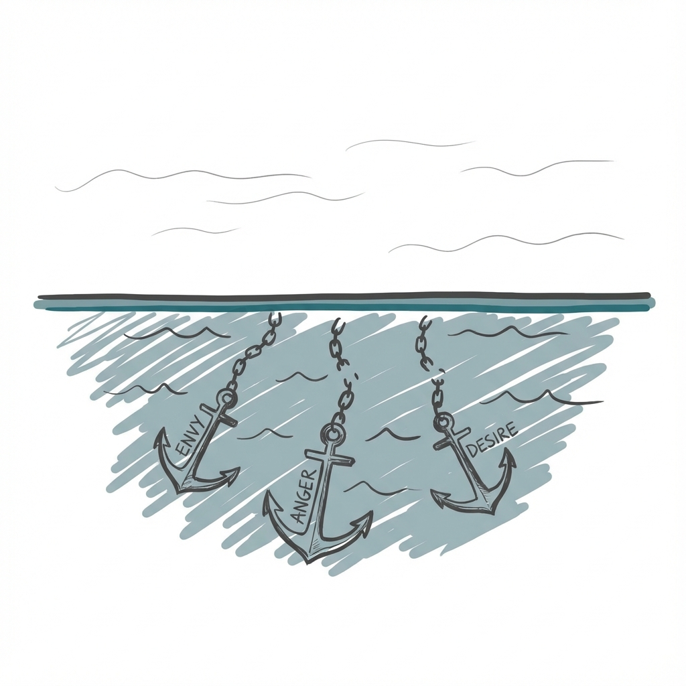
We spend our lives chasing wealth, assuming it will buy us happiness. But often, we arrive at the finish line only to find we are just as anxious and unsatisfied as when we started. Only now, we have nicer cars to cry in.
Naval’s most radical insight is that happiness is a skill.
Happiness is a muscle you exercise.
Maybe happiness is not something you inherit or even choose, but a highly personal skill that can be learned, like fitness or nutrition. — Naval Ravikant
To learn this skill, we first have to unlearn the programming that makes us miserable.
The Problem of Desire
The root of our unhappiness is desire.
We walk around with a constant mental chatter: I need this job. I need this partner. I need to fix this.
We are wired for dissatisfaction because evolution didn't care about our happiness. It cared about our survival.
A satisfied caveman was a dead caveman.
But in the modern world, this survival mechanism has become a torture device.
Naval's definition of desire is brutal and precise:
Desire is a contract you make with yourself to be unhappy until you get what you want. — Naval Ravikant
Think of it like signing a legal document.
Every time you want something, you are putting pen to paper: I agree to feel incomplete until I get X. You are deferring happiness to the future.
And when you finally get X? You tear up that contract and immediately sign a new one for Y.
You are running on a hedonic treadmill, chasing a horizon that moves with you.
This doesn't mean you shouldn't have desires.
It means you should be aware of your desires. Pick one big desire at a time, and recognize that you are choosing to be unhappy about that one thing until you get it. Drop the other 99 trivial desires that are cluttering your mind.
Peace vs. Joy
Most people confuse happiness with joy.
- Joy is a high-energy state. It is a spike of emotion.
- Misery is a low-energy state. It is a trough of emotion.
If you chase joy, you will eventually swing back to misery.
Think of joy and misery as a pendulum. The higher you swing to one side, the further you must swing to the other. You cannot stay high forever. Your dopamine receptors burn out.
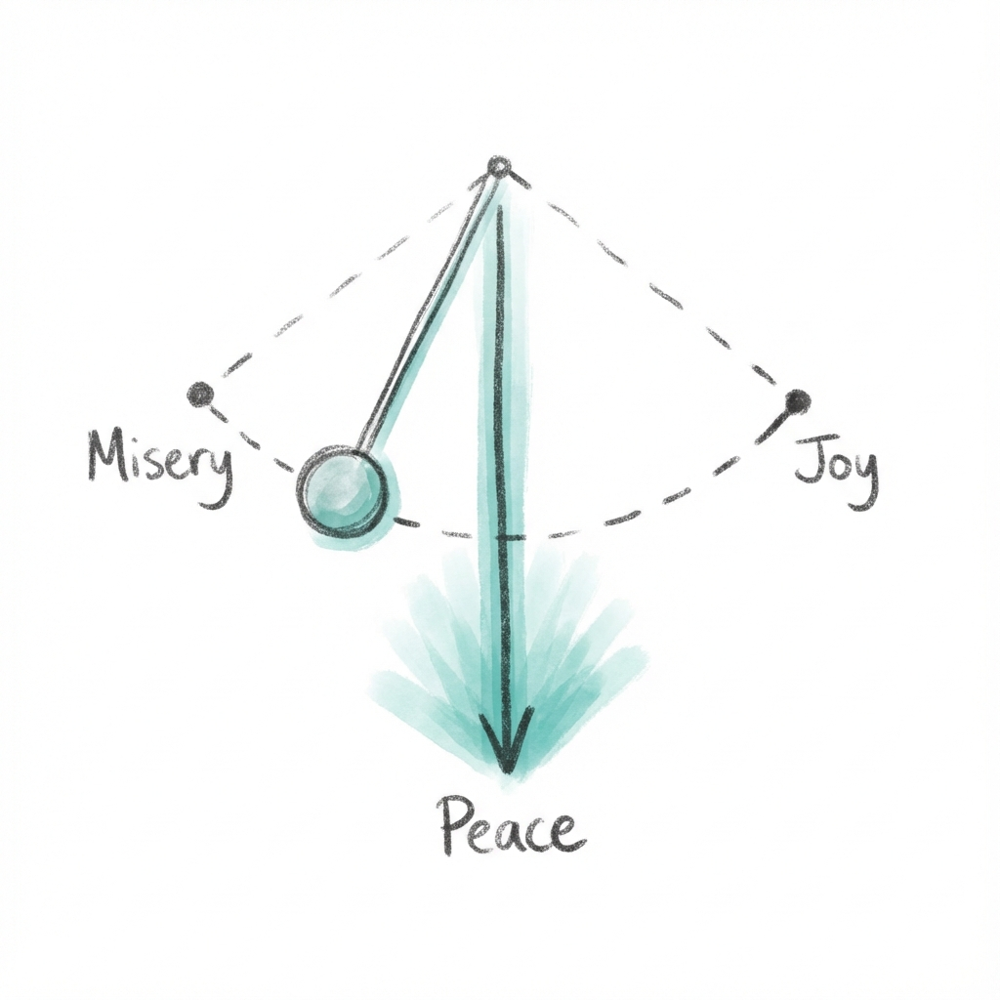
Naval suggests aiming for something different: Peace.
Peace is not a swing of the pendulum. It is the stillness at the center.
It is the feeling you have when you are completely absorbed in a sunset, or a game of catch, or a great conversation. In those moments, you aren't thinking about the past (regret) or the future (anxiety).
You are just there.
Happiness is the state when nothing is missing. When nothing is missing, your mind shuts down and stops running into the past or future to regret something or to plan something. — Naval Ravikant
A happy person isn't someone who is ecstatic all the time.
It is someone who can sit in a room alone for 30 minutes and not feel the urge to pick up their phone.
The Comparison Trap
If desire is the internal enemy, envy is the external enemy.
Envy is the cancer of the soul. It is a relative game. If you are earning \$1 million a year, but your neighbor earns \$2 million, you feel poor.
But envy is a delusion.
When you envy someone, you are usually cherry-picking one aspect of their life (their money, their beauty, their fame). You are ignoring their bad back, their divorce, their insomnia, their anxiety.
The Swap Test:
If you want to trade lives with someone, you have to trade everything. You don't just get the money. You get the trauma, the age, the hidden struggles.
If you're not willing to do a wholesale, 24/7, 100 percent swap with who that person is, then there is no point in being jealous. — Naval Ravikant
Once you realize you wouldn't actually want to be anyone else, you are free to be yourself.
Happiness Habits
Just like you go to the gym to build physical muscles, you need habits to build happiness muscles.
- Meditation: Think of it as debugging your brain. You sit, you watch your thoughts, and you realize you are not your thoughts. You are the observer.
- Gratitude: It sounds cliché, but it works. Your brain is a search engine. If you search for what is wrong, you will find it. If you search for what is right, you will find that too.
- Reframing: When something bad happens, ask: What is the positive interpretation of this? There is almost always a lesson or a silver lining.
- Sunlight and Exercise: You are a biological machine. If you treat your body like a garbage dump, your mind will feel like a garbage dump.
Happiness is something you do.
Module 5: Saving Yourself
Ultimately, no one is coming to save you.
- Your doctor can’t save your health. They can only treat your disease.
- Your boss can’t save your wealth. They can only pay your salary.
- Your guru can’t save your soul. They can only point the way.
You have to save yourself. And it starts with the most fundamental layer of existence: Biology.
The Biological Machine
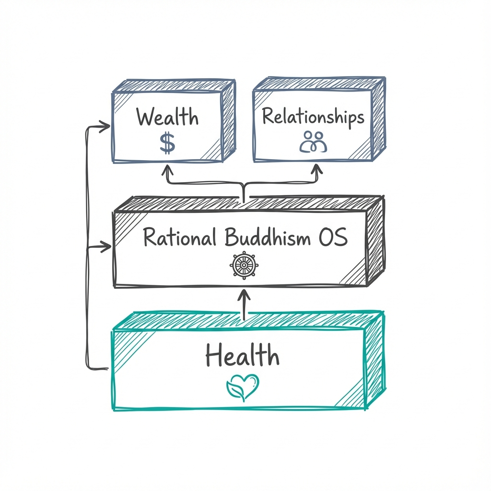
We live in our heads, treating our bodies like mere transport vehicles for the brain.
But the mind is part of the body. You cannot have a clear, peaceful mind in a sick, inflamed body.
Prioritize your health above everything else. Above your family, above your work, above your wealth.
Why?
Because if you are dead or incapacitated, you are of no use to your family, work, or wealth.
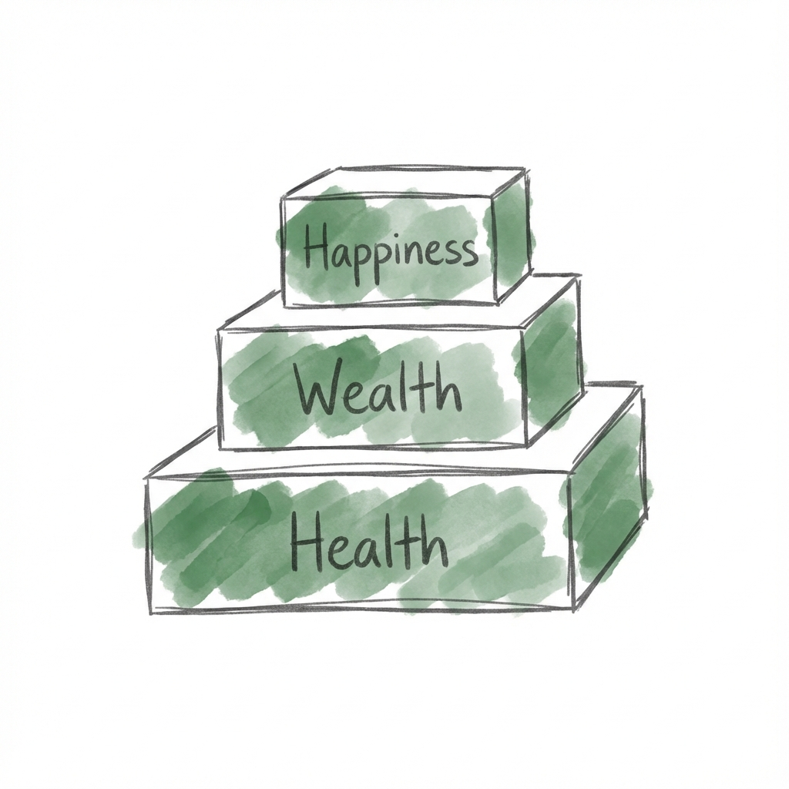
Naval’s approach to health is simple but strict: 1. Diet: The closer to nature, the better. Sugar and processed carbohydrates are poisons. Intermittent fasting resets the system. 2. Exercise: It’s better to do a little bit every day than a lot once a week. The specific workout matters less than the consistency.
The best workout for you is the one you're excited enough to do every day. — Naval Ravikant
- Cold Exposure: Cold showers or ice baths train your nervous system to handle stress. It is a voluntary suffering that builds resilience.
A calm mind, a fit body, and a house full of love. These things cannot be bought. They must be earned. — Naval Ravikant
Rational Buddhism
We tend to think we have to choose between being a Yogi (spiritual, poor, peaceful) and a Commissar (materialistic, rich, anxious).
Naval proposes a middle path: Rational Buddhism.
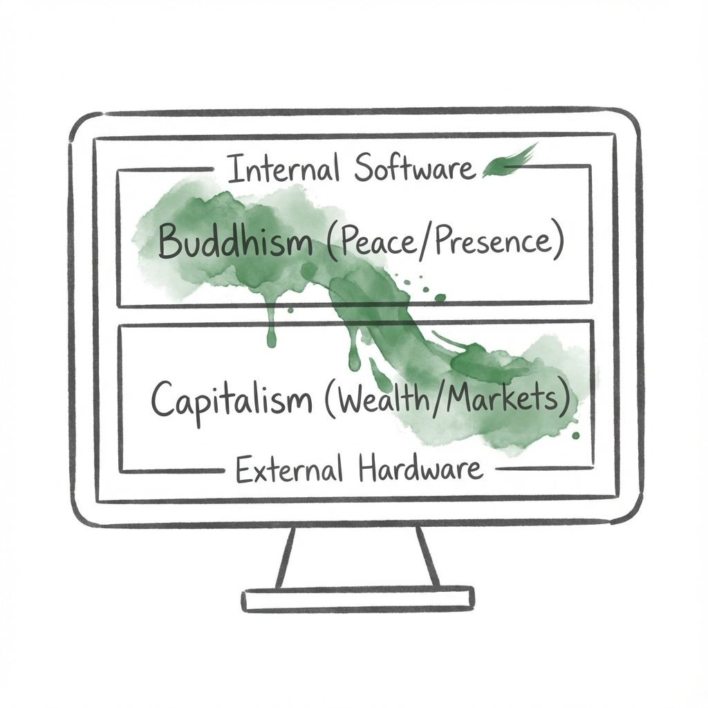
This is the operating system for the modern age. It takes the internal software of the Buddha (mindfulness, acceptance, non-attachment) and runs it on the external hardware of a capitalist.
- You can be ambitious in the world but peaceful inside.
- You can play the game of wealth creation but not attach your self-worth to the outcome.
- You can enjoy luxury but be ready to walk away from it at any moment.
The goal is to be in the world, but not of the world. To play the game, but know it’s just a game.
Habits > Willpower
We overestimate our willpower. We think we can decide to be healthy or decide to work hard. But willpower is a finite resource. It runs out.
Instead of relying on willpower, rely on habits.
A habit is something you do without thinking. It is an automated script. The goal of self-improvement is to install good habits until they become your identity.
- Identity Change: The strongest way to change a habit is to change your identity. Don’t say, "I’m trying to quit smoking." Say, "I’m not a smoker." Don’t say, "I want to run." Say, "I am a runner."
- Impatience with Actions, Patience with Results: We are usually the opposite. We are lazy with our actions (procrastinating) but impatient with our results (expecting instant success). Flip it. Be aggressive with your actions today, but patient with the timeline.
Impatience with actions, patience with results. — Naval Ravikant
Choosing Your Peers
You are the average of the five people you spend the most time with. This is a biological reality. We are empathetic creatures. We absorb the emotions, values, and habits of those around us through osmosis.
If you hang out with anxious, pessimistic people, you will become anxious and pessimistic.
If you hang out with ambitious, happy people, you will become ambitious and happy.
The Rule:
If you can’t see yourself working with someone for life, don’t work with them for a day.
This applies to friends, partners, and investors. Life is long. Relationships compound. Cut the toxic people out ruthlessly. It sounds harsh, but it is necessary for your survival.
I'm not interested in being polite. I'm interested in being true. — Naval Ravikant
Save yourself first. Put on your own oxygen mask. Only then can you help the world.
Module 6: Philosophy & Freedom
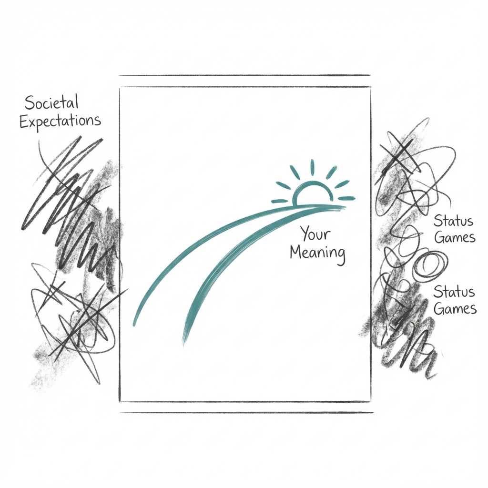
At the end of the day, what is all this for?
Why build wealth? Why seek happiness?
The ultimate goal is Freedom.
But freedom is a tricky concept.
We usually think of Freedom To: freedom to travel, freedom to buy a Ferrari, freedom to do whatever we want.
Naval argues for a higher form of freedom: Freedom From.
- Freedom from money problems.
- Freedom from the need to work for others.
- Freedom from anger and uncontrolled emotions.
- Freedom from the expectations of society.
Think of it like a sculpture.
Freedom To is adding clay. More options, more possessions, more experiences. Freedom From is chipping away marble. Removing the constraints, the debts, the emotional baggage that weighs you down.
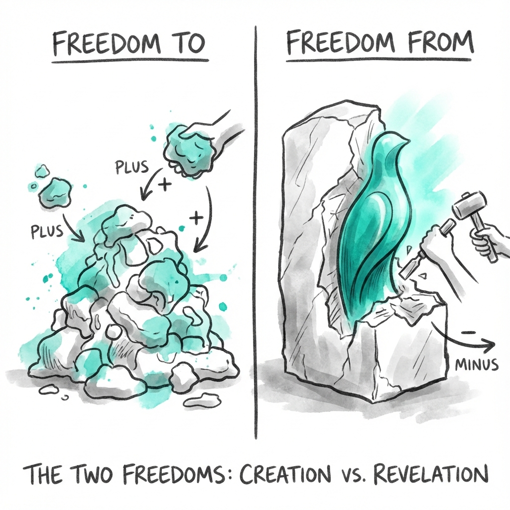
The masterpiece is revealed by what you remove, not what you add.
When you have Freedom From, you are truly sovereign. You are not a slave to your boss, your bank account, or your own monkey mind.
The Meanings of Life
Does life have a meaning?
Naval offers two answers:
-
No. Scientifically, you are a biological accident on a tiny rock in a vast, indifferent universe. In a few generations, no one will know your name. Everything you build will turn to dust. This sounds depressing, but it is actually liberating. It means there is no script you have to follow. You are free.
-
Yes. Meaning is what you create. You are a local entropy-reversal machine. Your job is to create order, beauty, and love in your immediate vicinity.
The meaning of life is just to be alive. It is so plain and so obvious and so simple. And yet, everybody rushes around in a great panic as if it were necessary to achieve something beyond themselves. — Alan Watts
Life is a single-player game.
You are born alone, you die alone, and all your interpretations are alone.
The competition is in your head.
The judgment is in your head.
The sooner you realize this, the sooner you stop performing for an audience that isn't watching.
The Present Moment
All of our anxieties come from living in the Future.
All of our regrets come from living in the Past.
But the future and the past do not exist. They are mental constructs. The only thing that exists, the only thing that ever exists, is the Present Moment.
- You can never be happy in the future. You can only be happy now.
- You can never fix the past. You can only accept it now.
The ability to stay in the present moment is the ultimate advantage.
It is what allows you to see reality clearly (improving your judgment) and to appreciate life fully (improving your happiness).
A happy person isn't someone who's happy all the time. It's someone who effortlessly interprets events in such a way that they don't lose their innate peace. — Naval Ravikant
The Sovereign Individual
We are entering the age of the Sovereign Individual.
Technology has given us the tools to be self-sufficient. We can learn anything (Internet), build anything (Code), and reach anyone (Media). We no longer need the tribe, the corporation, or the state to survive.
This is a return to our hunter-gatherer roots, but with modern leverage.
We can be independent contractors, trading our value directly with the world, free from the hierarchies that crush the human spirit.
But with this power comes responsibility. You must own your failures. You must manage your own psychology. You must save yourself.
You have two lives. The second one begins when you realize you only have one. — Naval Ravikant
Conclusion
Naval Ravikant was born poor and miserable.
Now he is wealthy and at peace.
The gap between those two states was not luck. It was not genetics. It was not fate.
It was work.
He learned the math of leverage. He learned the biology of desire. He treated wealth and happiness as skills, and he practiced them until they became who he is.
The uncomfortable truth of the Almanack is that you can do the same.
If wealth is a skill, you can learn it.
If happiness is a skill, you can practice it.
If health is a skill, you can build it.
There is no secret. There is no shortcut. There is only the daily decision to show up: read the book, take the risk, sit with your thoughts, eat the vegetables, say no to the status games.
Naval's wish for you is simple:
Let's get them all rich. Let's get them all fit and healthy. Then, let's get them all happy. — Naval Ravikant
Start today. Pick up a book. Do a pushup. Invest a dollar. And for god’s sake, stop waiting for permission.
Every week, one book gets this treatment — fully structured, nothing skipped. Find them all at longform.online